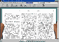

自从上网以来，笔者经常在国内外的新闻站点浏览信息。通过Web页面查找新闻资料，固然有其直接方便的优点，但是，得到的信息却不太容易分类保存。近日，我使用了一个名为newZPrint的软件，它可以让你简便快捷地在网上收取保存各类新闻。
与我们常用的Web页浏览有所不同的是，使用newZPrint,你并不需要用浏览器连接到某一网站上去，一切操作都可通过newZPrint直接进行。打个比方，newZPrint就好像一个报童一样，把你想要的资料亲自送到你的计算机里来。当你安装好newZPrint第一次运行时，该软件会自动上网收集可用的新闻资源(图1)，收集完毕后，程序会弹出一对话框将其分类列出以供选择。目前，使用newZPrint可访问40
多种英语新闻资源，其中不乏一些著名的报纸、期刊和网站，如时事类的《纽约时报（New York Times)》，经济类的《财富杂志（Fortune)》，科技类的《科学美国人（Scientific
American)》，体育类的ESPN，娱乐类的Billboard公告牌，等等。选择完毕后，以后再使用newZPrint时只需按“Deliver
Now”，该软件就会自动连接到相应的服务器上收取文章，然后整理并以分页的方式送到你面前。这样，你就可以断线仔细阅读下载的文章了。如果你对某篇文章很感兴趣，可以双击标题将其选定，然后按右键在弹出菜单中选“Save
Article”将其单独保存为一个文本文件。
newZPrint还提供了比较丰富的定制“个人新闻选项”的功能。你可以在某一新闻资源里选择自己偏爱的栏目，或为各个栏目分配可下载的文章数目等等。经过个人设定之后，你所能下载得到的并不是一份普通的报纸，而是一份全新的“个人版”报纸(图2)，栏目的设置都是根据你的个人喜好而来。这不是很有吸引力吗？
可以说，newZPrint提供了一种全新的获取网上信息的方式。虽然它是一个英文软件，因为主要通过向导（Wizard)的方式进行操作，使用起来也毫无困难。它不仅可以提供给你大量的网上信息，而且对于那些英语爱好者也是一个好帮手。我在网上常常看到有人苦苦寻找英语电子杂志，其实用newZPrint可以达到同样的效果。你可以用它很方便地下载读取到原汁原味的西方著名报刊上的文章，这对提高英语水平也是大有好处的。
说了这么多，快去下载一个newZPrint来用吧（湖南信息港软件库有此软件：http://soft.hn.cninfo.net)。如果你在使用它的过程中有什么心得体会，也欢迎来信和我交流。我的信箱是：ribosome@telekbird.com.cn。
(安徽 邢毅)
|